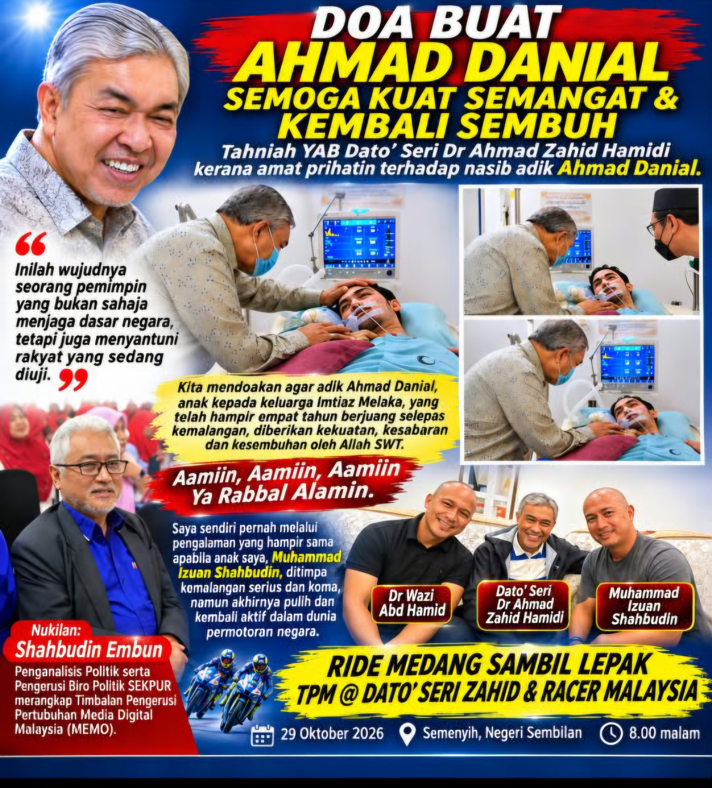

DOA BUAT AHMAD DANIAL: SEMOGA KUAT SEMANGAT DAN KEMBALI SEMBUH
Tahniah YAB Dato' Seri Dr Ahmad Zahid Hamidi, seorang pemimpin yang amat prihatin dan mempunyai nilai kasih sayang serta kemanusiaan yang tinggi.
Ada kalanya sesuatu peristiwa yang kita saksikan mampu membuka kembali kenangan lama yang tersimpan jauh di sudut hati. Lebih-lebih lagi apabila ia melibatkan seorang anak yang sedang berjuang untuk meneruskan kehidupannya selepas ditimpa musibah.
Saya mengikuti perkembangan mengenai adik Ahmad Danial, anak kepada keluarga Imtiaz dari Melaka, yang telah hampir empat tahun berjuang untuk pulih selepas kemalangan yang menimpanya.
Saya ingin mengajak kita semua sama-sama menadah tangan dan berdoa agar Ahmad Danial diberikan kekuatan, kesabaran serta kesembuhan oleh Allah SWT.
Aamiin Ya Rabbal Alamin.
Apa yang benar-benar menyentuh hati saya ialah keprihatinan YAB Dato' Seri Dr Ahmad Zahid Hamidi yang mengambil berat tentang nasib Ahmad Danial. Beliau bukan sekadar bertanya khabar, tetapi sanggup turun sendiri ke hospital untuk menziarahi Ahmad Danial, memberikan kata-kata semangat serta mendoakan kesembuhannya.
Lebih mengharukan apabila beliau turut memberikan perhatian kepada kedua-dua ibu bapa Ahmad Danial yang selama hampir empat tahun tidak pernah mengenal erti penat dalam menjaga, membelai dan mendoakan anak tersayang mereka.
Inilah nilai seorang pemimpin yang mempunyai sentuhan kemanusiaan. Jawatan dan kedudukan tidak menghalang seseorang untuk mendekati rakyat yang sedang diuji dengan kesusahan.
PENGALAMAN SAYA SENDIRI: ANAK SAYA JUGA PERNAH BERADA DI AMBANG KEHIDUPAN DAN KEMATIAN
Saya amat memahami perasaan ibu bapa Ahmad Danial kerana saya sendiri pernah melalui pengalaman yang hampir sama apabila anak saya, Muhammad Izuan Shahbudin, seorang bekas pelumba motosikal negara dalam lingkungan PETRONAS, ditimpa kemalangan serius ketika usia mudanya.
Saya masih ingat detik hitam itu.
Saya menerima panggilan daripada pihak polis yang memaklumkan bahawa anak saya mengalami kemalangan serius dan sedang berada di Unit Kecemasan Hospital Kuala Lumpur (HKL) dalam keadaan koma.
Apabila saya sampai di hospital, saya melihat sendiri anak saya terbaring di atas pengusung, tidak sedarkan diri, dengan tubuh dipenuhi kecederaan.
Sebagai seorang bapa, hanya Allah SWT yang mengetahui perasaan saya ketika itu.
Saya bertanya kepada doktor mengapa keadaan anak saya begitu serius. Doktor menjelaskan bahawa pelbagai pemeriksaan termasuk X-ray dan MRI perlu dilakukan bagi mengetahui tahap kecederaannya.
Namun, ada satu perkara yang masih saya ingat sehingga hari ini.
Doktor memberitahu saya bahawa selain rawatan perubatan, semangat dan keinginan pesakit untuk terus berjuang juga amat penting dalam menghadapi proses pemulihan.
Saya terus menjawab kepada doktor:
"Doktor, anak saya ini sejak kecil memang seorang yang kuat semangat. Kalau bermain bola, kadang-kadang sampai hampir Maghrib baru pulang ke rumah. Kalau sudah minat sesuatu, dia memang tidak mudah mengalah."
Saya turut menceritakan minatnya terhadap motosikal dan perlumbaan yang begitu mendalam ketika zaman mudanya.
Malah, beliau pernah terlibat dalam perlumbaan motosikal tidak rasmi pada waktu malam, termasuk di laluan Genting Highlands sehingga ke kawasan bulatan Parlimen, Jalan Duta.
Mendengar cerita saya, doktor menyatakan bahawa semangat juang seperti itu merupakan satu perkara yang baik untuk diharapkan dalam proses pemulihannya.
Selepas hampir 10 hari berada di hospital, Alhamdulillah, satu perkembangan yang amat menggembirakan berlaku.
Muhammad Izuan akhirnya membuka mata dan kembali sedar!
Walaupun pada peringkat awal kakinya masih belum dapat digerakkan dan beliau belum mampu bercakap, jururawat memberikan kertas supaya dia dapat menyampaikan sesuatu melalui tulisan.
Bagi saya, saat itu merupakan satu rahmat Allah yang tidak mungkin saya lupakan sepanjang hayat.
Alhamdulillah, dengan rawatan, sokongan keluarga dan semangatnya sendiri, Izuan akhirnya pulih daripada kecederaan tersebut.
DARIPADA SEORANG ANAK YANG DITIMPA MUSIBAH KEPADA PELUMBA PETRONAS
Saya tidak pernah menyangka anak saya yang pernah terbaring koma itu akhirnya kembali aktif dalam dunia permotoran.
Melihat minat dan bakatnya, saya mengambil keputusan untuk membimbingnya supaya menyertai pertandingan motosikal secara rasmi dan bukannya terus terlibat dalam perlumbaan tidak rasmi.
Saya kemudiannya mendapatkan bantuan daripada Tan Sri Muhyiddin Yassin yang ketika itu merupakan Menteri Belia dan Sukan pada tahun 1998.
Alhamdulillah, beliau membantu membuka peluang kepada Muhammad Izuan untuk menyertai pasukan PETRONAS Sprinta bersama Dr Wazi Abd Hamid.
Bakat dan kesungguhan mereka akhirnya membawa nama Malaysia ke peringkat Asia.
Itulah perjalanan hidup seorang anak yang pernah berada dalam keadaan koma, tetapi akhirnya mendapat peluang kedua untuk meneruskan impiannya.
PERTEMUAN SEMULA DUNIA PERMOTORAN DAN KEPRIHATINAN SEORANG PEMIMPIN
Pada 29 Oktober 2026, berlangsung satu pertemuan YAB Dato' Seri Dr Ahmad Zahid Hamidi dengan anak saya, Muhammad Izuan Shahbudin, Dr Wazi Abd Hamid dan Shahrul Yuzi, bekas pelumba motosikal negara yang pernah mengharumkan nama Malaysia dalam dunia permotoran.
Program yang berlangsung di Semenyih, Negeri Sembilan, pada jam 8.00 malam itu membawa tema:
RIDE MEDANG SAMBIL LEPAK TPM @ DATO' SERI ZAHID & RACER MALAYSIA.
Pertemuan ini cukup bermakna kerana menghimpunkan semula sahabat-sahabat lama dalam dunia permotoran negara.
BUAT ADIK AHMAD DANIAL, JANGAN PERNAH PUTUS ASA!
Kepada adik Ahmad Danial, saya ingin berpesan:
Teruskan berjuang. Jangan sesekali berputus asa. Ketahuilah bahawa kasih sayang ibu dan ayah yang tidak pernah meninggalkan kamu selama hampir empat tahun merupakan satu anugerah yang amat besar.
Kepada kedua-dua ibu bapa Ahmad Danial, saya juga ingin menyampaikan rasa hormat dan kagum atas kesabaran serta pengorbanan yang telah dicurahkan.
Saya pernah berada di tempat yang hampir sama. Saya tahu betapa beratnya perasaan seorang bapa apabila melihat anak sendiri terbaring tidak berdaya.
Namun, jangan pernah berhenti berharap dan berdoa.
Saya percaya setiap usaha, rawatan, kasih sayang keluarga dan sokongan insan-insan di sekeliling Ahmad Danial amat bermakna dalam perjalanan pemulihannya.
Semoga Allah SWT mengurniakan kesembuhan, kekuatan dan ketabahan kepada adik Ahmad Danial.
Aamiin, Aamiin, Aamiin Ya Rabbal Alamin.
Akhir sekali, tahniah dan setinggi-tinggi penghargaan kepada YAB Dato' Seri Dr Ahmad Zahid Hamidi atas keprihatinan serta sifat ihsan yang ditunjukkan.
Inilah wajah kepimpinan yang kita mahu lihat. Pemimpin yang bukan sahaja hadir ketika majlis rasmi, tetapi turut hadir ketika rakyat sedang berhadapan dengan ujian kehidupan.
Kerana akhirnya, ukuran sebenar seorang pemimpin bukan hanya pada jawatan yang disandang, tetapi juga pada nilai kemanusiaan yang dibawanya.
SEORANG PEMIMPIN YANG MENYANTUNI, SEORANG BAPA YANG MEMAHAMI DAN SEORANG ANAK YANG TIDAK PERNAH BERHENTI BERJUANG.
— Shahbudin Embun
Kembali ke page utama-Nanis communication | IPK MEDIA